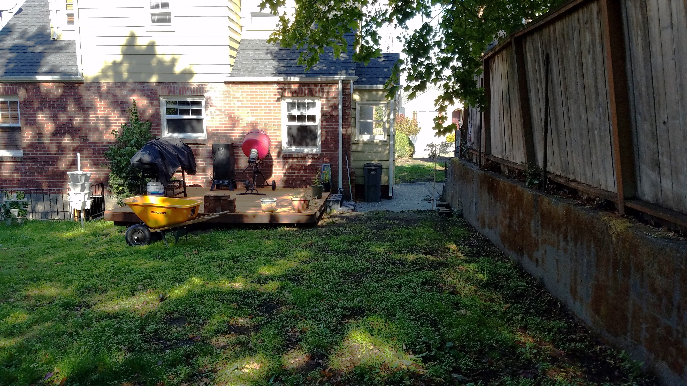
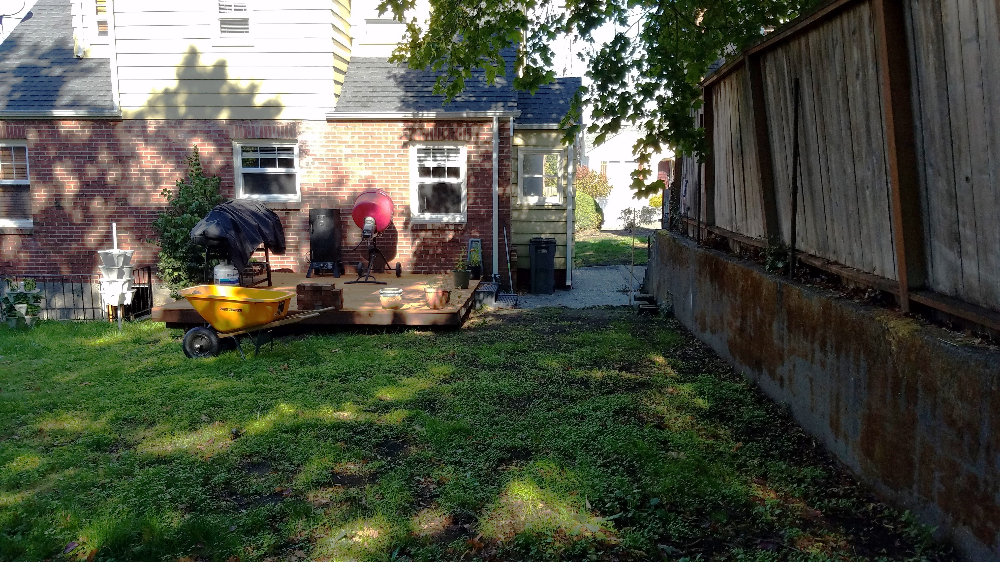

A Blank Canvas: Greenspace
The backyard started as a blank canvas — a large, open space that lacked character and charm. At the beginning of the landscaping project, the yard was far from inviting, with little to offer in terms of design or visual appeal. These first pictures capture the raw, untouched condition of the space, before any changes were made. With a vision in mind, I began transforming this once-empty area into a beautiful and functional outdoor haven. These images represent the starting point of the journey, before the first steps were taken toward creating a more vibrant and welcoming environment.


What isn't visible in the photo is the significant difference in elevation: the back corner of the yard is 4 feet higher than, when looking at the picture of the left side of the house. This photo was taken before I began excavating to create terraces, a key part of the landscape transformation. The project started with the challenge of leveling and reshaping the yard to create a more functional and visually interesting space.

 



The last two pictures offer a glimpse of the front yard before any transformation took place, showing its unkempt and uninspired state. At this point, the space lacked structure and design, with no clear landscaping features to speak of. These photos capture the yard as a blank slate, ready for the vision and effort that would soon reshape it into a beautiful and functional outdoor space